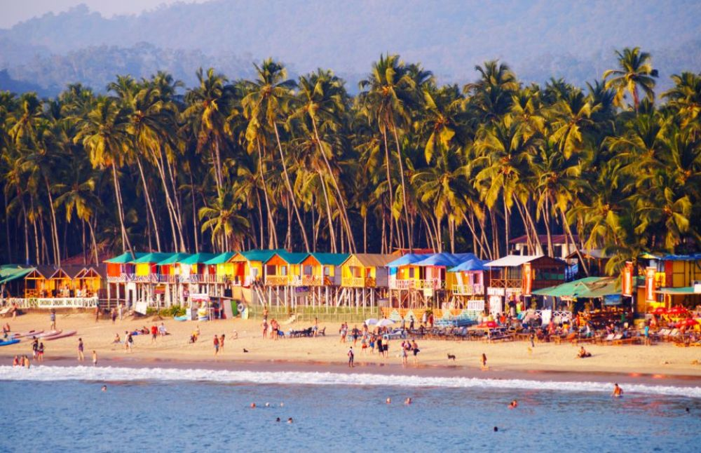
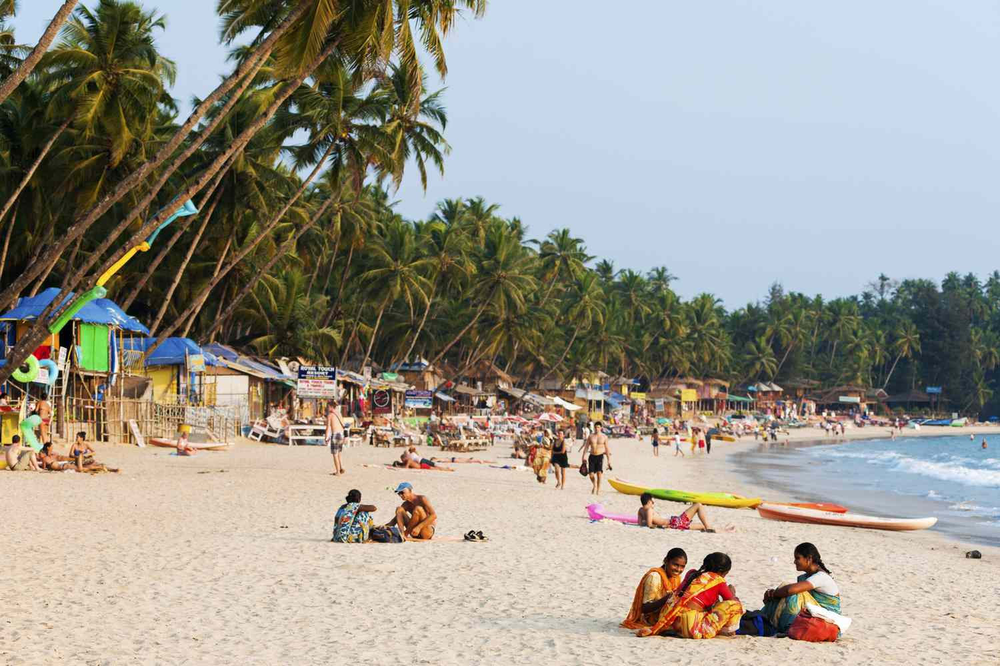
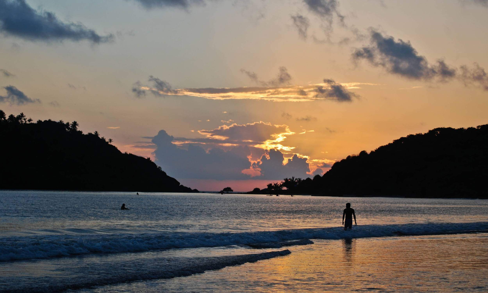
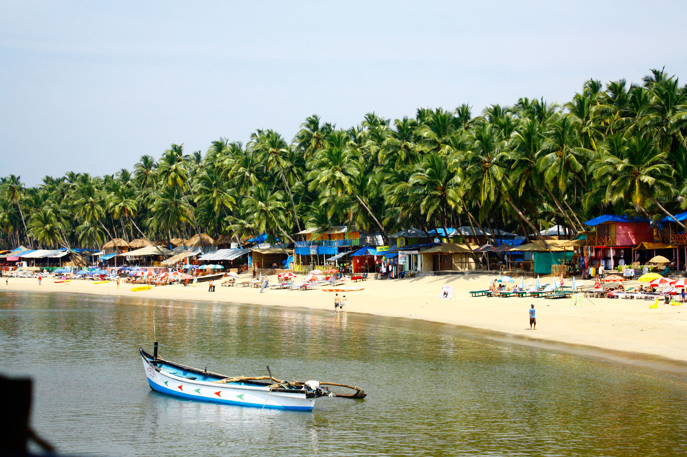
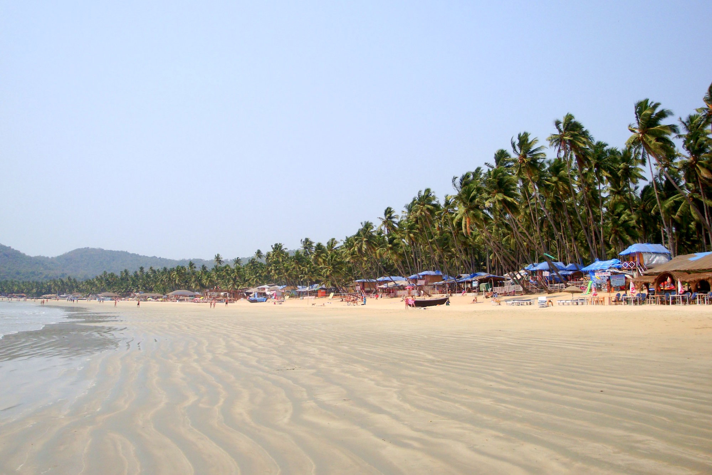

Palolem Beach is located at 15°00′36″N 74°01′24″E, within 2.5 kilometres of the market town of Chaudi in South Goa, and about 40 minutes from Margao, the district headquarters of South Goa. Other neighbouring beaches in South Goa include Agonda Beach and Patnem Beach.Palolem Beach is largely unspoiled and is inhabited by both local fishermen and by foreign tourists who live in shacks along the shore or in the main village itself. It is about one mile (approximately 1.61 km) long and is crescent-shaped; one can view the entire beach from either end. Both ends of the beach consist of rocks jutting out into the sea. The depth of the sea increases gradually, being shallowest at the northern end of the beach, making it safe for average swimmers, and the currents are not fast.